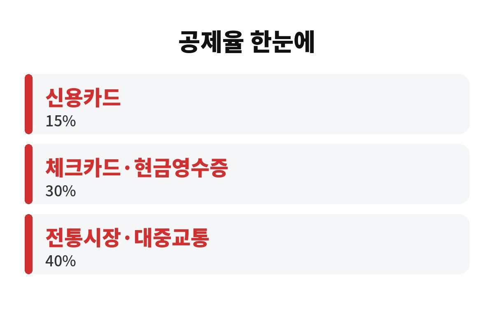

신용카드 체크카드 공제는 같은 돈을 써도 신용카드는 15%, 체크카드는 30%로 딱 2배 차이가 납니다. 연말정산을 앞둔 직장인이라면 지금 10월에 어떤 카드를 꺼내느냐에 따라 환급이 달라질 수 있는데, 도대체 어떻게 계산되는 걸까요?
연말정산에서 카드 사용액은 소득공제 항목이에요. 쉽게 말해 번 돈에서 일정 금액을 빼 주고, 그 줄어든 소득에 세금을 매기는 구조죠. 이때 카드 종류마다 빼 주는 비율이 다릅니다.
일반적으로 알려진 공제율은 신용카드 15%, 체크카드와 현금영수증 30%, 전통시장과 대중교통 40%예요. 같은 100만 원을 써도 신용카드는 15만 원, 체크카드는 30만 원이 소득에서 빠지는 셈입니다. 다만 세법은 해마다 조금씩 바뀌니 올해 기준은 국세청 안내로 꼭 한 번 더 확인해 주세요.
맞아요. 카드 공제는 쓴 돈 전부가 아니라 총급여의 25%를 넘긴 부분부터 적용됩니다. 연봉이 5천만 원이라면 약 1,250만 원까지는 어떤 카드로 써도 공제가 없어요. 그 문턱을 넘은 뒤부터 공제율이 의미를 갖는 거죠.
그래서 순서가 중요합니다. 문턱을 넘기기 전까지는 카드 종류를 크게 따질 필요가 없고, 문턱을 넘은 뒤에 쓰는 돈을 체크카드로 돌려야 효과가 커요. 참고로 공제 계산에서는 문턱 금액을 신용카드 사용액에서 먼저 채운 것으로 보는 방식이라, 신용카드를 많이 쓴 분은 더 유리하게 계산되는 부분도 있습니다.
| 구분 | 공제율 |
| 신용카드 | 15% |
| 체크카드·현금영수증 | 30% |
| 전통시장·대중교통 | 40% |

간단히 예를 들어 볼게요. 연봉 5천만 원 직장인이 올해 카드로 3천만 원을 썼다고 해 봅시다. 문턱 1,250만 원을 빼면 공제 대상은 약 1,750만 원이에요. 전부 신용카드면 15%인 약 262만 원이 소득에서 빠지고, 이 구간에서 체크카드를 많이 썼다면 공제액이 훨씬 커집니다.
소득공제 한도가 있어서 무한정 커지지는 않아요. 총급여 7천만 원 이하는 보통 300만 원 안팎이 상한입니다. 세율 15%를 가정하면 262만 원 공제는 약 39만 원, 한도인 300만 원이면 약 45만 원 정도 세금이 줄어드는 계산이에요. 숫자는 어디까지나 어림값이니 감안해서 보세요.
연말까지 두 달 남짓 남았으니, 이미 문턱을 넘겼는지부터 확인하세요. 홈택스 연말정산 간소화 서비스나 카드사 앱에서 올해 누적 사용액을 볼 수 있어요. 문턱을 넘었다면 남은 기간 생활비는 체크카드로, 대중교통과 전통시장은 가능하면 40% 구간으로 쓰는 게 이득입니다.
반대로 이미 공제 한도를 꽉 채웠다면 그 이상은 아무리 써도 소득공제가 늘지 않아요. 이때는 괜히 체크카드로 바꾸느라 혜택 좋은 신용카드 할인을 포기하지 마세요. 카드 혜택과 공제를 같이 따져서 손해 보지 않는 쪽이 정답이에요.
꼭 그렇진 않아요. 신용카드는 청구할인, 적립, 무이자 할부 같은 혜택이 있고, 체크카드는 혜택이 상대적으로 적은 편이거든요. 공제율 차이로 얻는 세금 절감액과 카드 혜택으로 얻는 금액을 같이 비교해야 진짜 이득이 보입니다.
예를 들어 한 달에 100만 원을 쓰는 가정이라면, 신용카드 혜택이 1% 안팎이라 약 1만 원이에요. 반면 문턱을 넘긴 구간에서 체크카드로 바꾸면 공제 차이가 15만 원 정도 더 생기고, 세율을 곱하면 약 2만 원 남짓 세금이 줄어듭니다. 구간과 세율에 따라 결과가 뒤집힐 수 있으니 본인 숫자로 한 번 계산해 보세요.
또 하나, 맞벌이 부부라면 카드 사용액을 어느 쪽 명의로 몰아줄지도 중요해요. 보통 문턱 25%를 넘기기 쉬운 쪽, 그러니까 연봉이 낮은 배우자에게 몰아주는 게 유리한 경우가 많습니다. 다만 부양가족 공제와 겹치는 조건이 있으니 가족 상황에 맞춰 확인하세요.
정리하면 문턱 25%, 공제율 15% 대 30%, 그리고 한도. 이 세 가지만 기억하면 됩니다. 여러분은 올해 어느 카드를 가장 많이 쓰셨나요? 댓글로 알려 주시고, 도움이 되셨다면 구독 눌러 주세요.
※ 본 글은 일반적인 정보 제공이며 투자·세무 권유가 아닙니다. 정확한 내용은 국세청 및 세무 전문가를 통해 확인하세요.